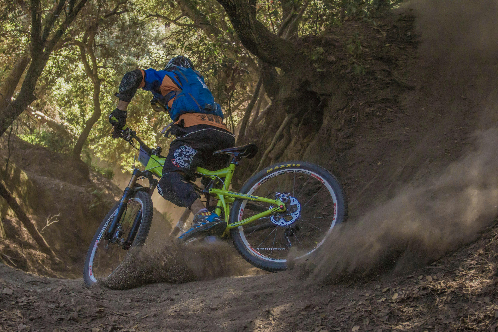
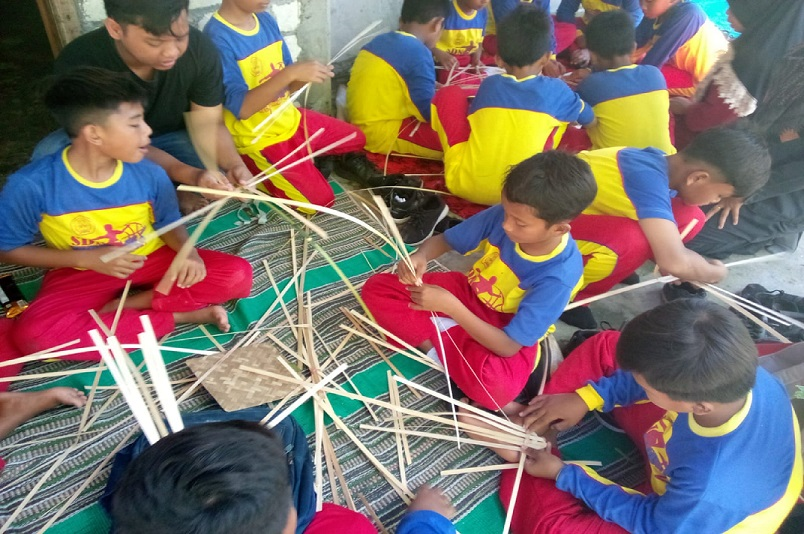
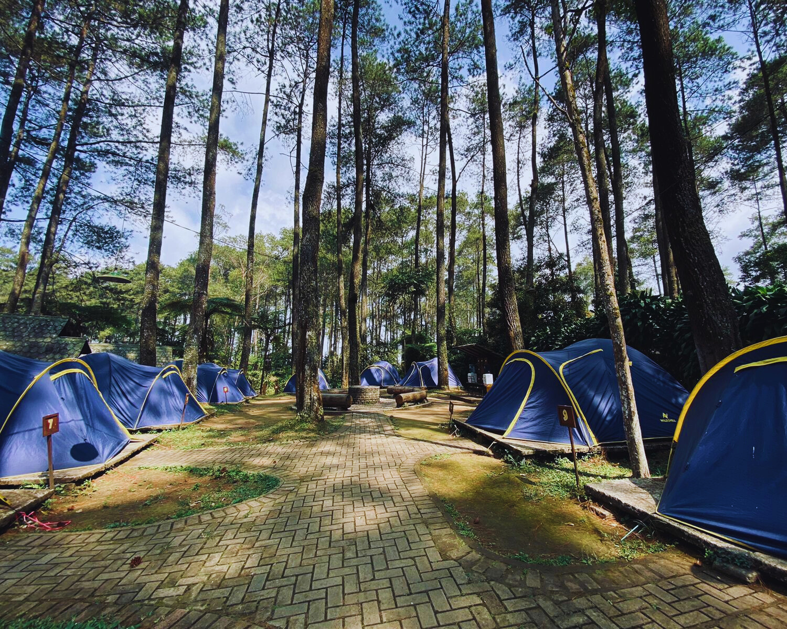
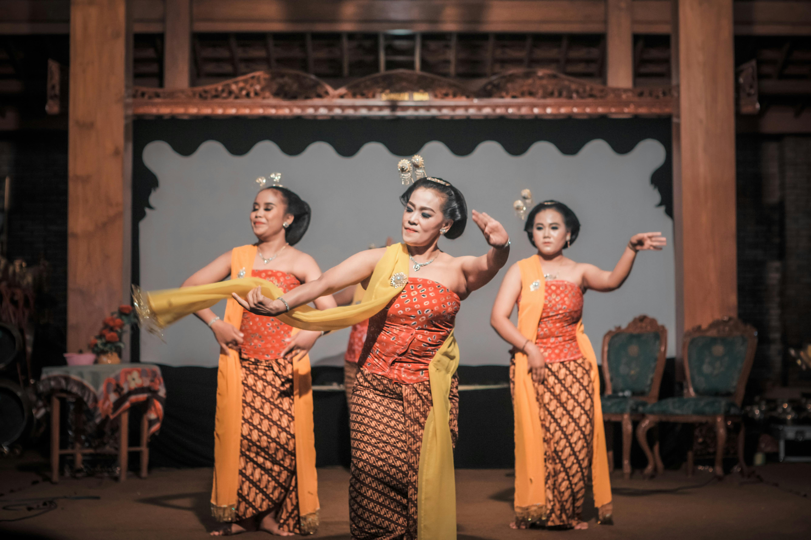
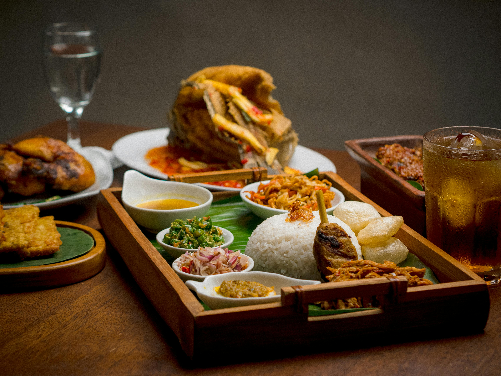

Aktivitas Masyarakat

Bersepeda Alam
Jelajahi desa dengan bersepeda melintasi pemandangan sawah yang hijau dan udara segar yang menenangkan.

Edukasi Pertanian
Pelajari teknik-teknik pertanian tradisional dan modern langsung dari petani lokal yang berpengalaman.

Workshop Kerajinan
Ikuti workshop membuat kerajinan tangan lokal seperti batik, anyaman, dan keramik.

Camping
Acara camping seru dengan aktivitas outdoor, api unggun, dan cerita lokal di tengah alam terbuka.

Pertunjukan Budaya
Nikmati pertunjukan tari tradisional, musik lokal, dan upacara adat yang menarik.

Kuliner Experiences
Pengalaman memasak bersama keluarga lokal dengan resep-resep tradisional yang sudah turun temurun.